мої найулюбленіші місця у львові
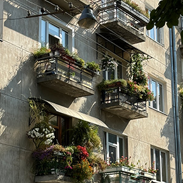
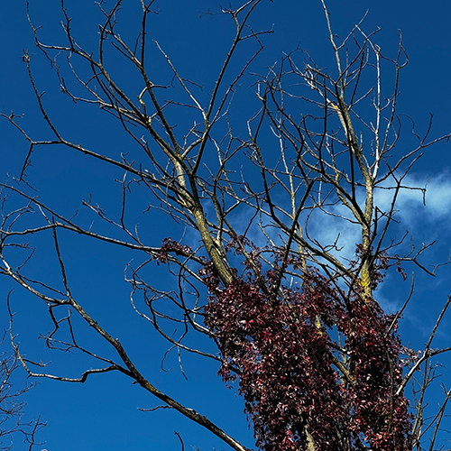
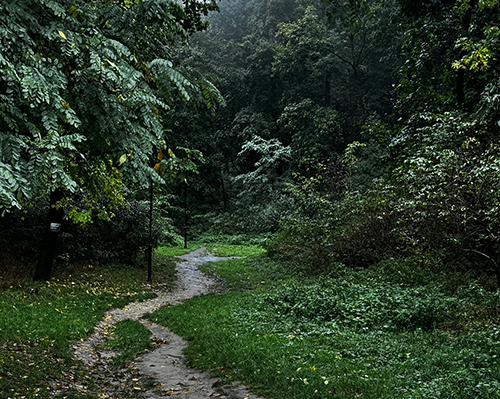
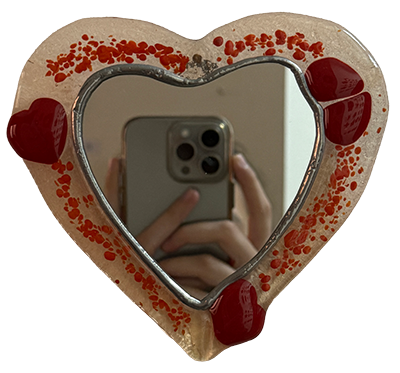
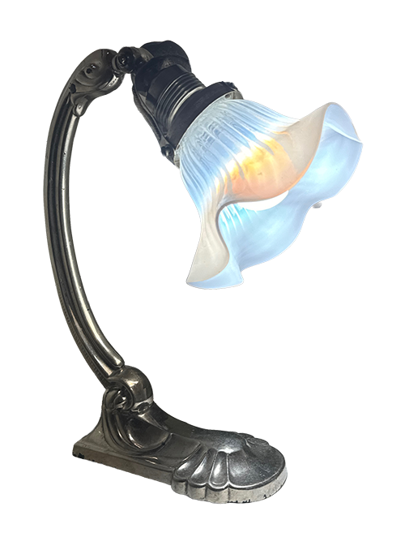
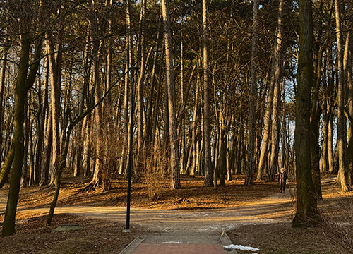
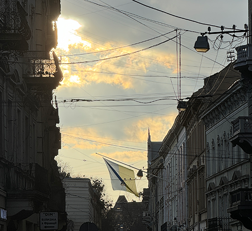
За весь час проживання у Львові, я із зацікавленістю дитини та обережністю дорослої збирала — і досі збираю — особливі місцини.
Ділюсь своїми місцями сили та улюбленими маршрутами, гуляючи якими заново закохуєшся в життя.
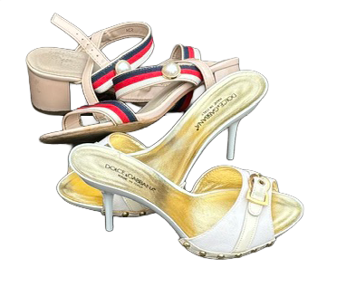
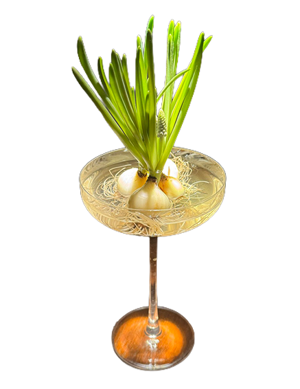
Тема: Навколо центра
Два найпопулярніших блошиних ринки в центрі Львова — цікавий початок маршруту. Не було нагоди щось там купляти, але чудова можливість повайбувати старим містом.
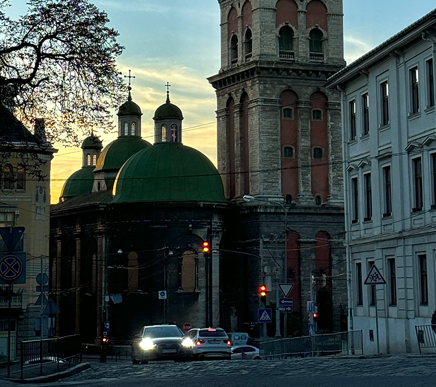
А ось тут я скупляюсь регулярно. Завжди знаходжу щось прикольне, особливо у відділі з тканинами.
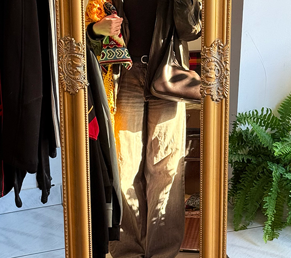
Basic точка з красивим видом на центр з самого центру. Не впадіть на гвинтових сходах.
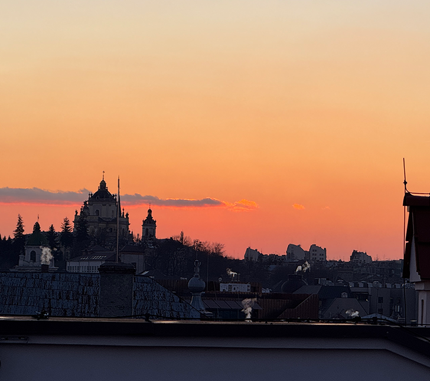
Чудовий заклад з мега вайбовим внутрішні двориком. Якщо зловите вільний столик на вулиці влітку ввечері вихідного дня — ви виграли джекпот. Щодо меню — в Плаві дуже смачні вина. Моє улюблене — персикове.
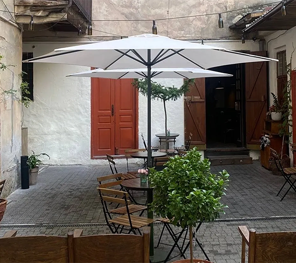
Памʼятаєте в Гаррі Поттері були окремі магазини для чаклунів? Ось це один з них! Це книжковий магазин з вайбами Гогвортсу або Гаварду, з як українськими, так і закордонними виданнями. І навіть якщо ви не фанат читання — точно знайдете щось що вам сподобається серед сувернірів.
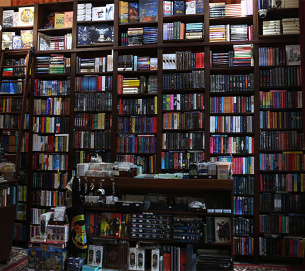
Величезна територія Знесіння — мій фаворит щоб загубитись подалі від людей. Але маю свої улюблені точки, як от Домівка врятованих тварин та озеро поруч. Можете поблукати різними стежками та полазити схилами, в будь якому випадку вас чекають неймовірні краєвиди.
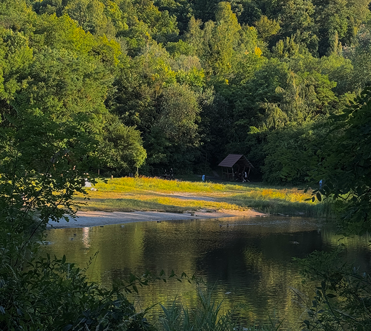
Після Знесіння ви вийдете до роздоріжжя вул. Кривоноса. Раджу йти по вулиці Високий Замок. І, насолодившись природою, ви зрештою вийдете назад в місто, звідки можете прямувати до оглядового майданчика — Меморіала Героїв Небесної Сотні.
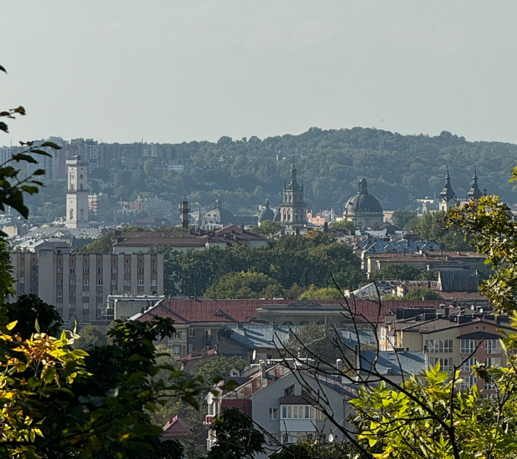
І на завершення такого активного дня — випийте китайського чаю в Піднебесній. Габу рекомендую. Вайб гарантую.
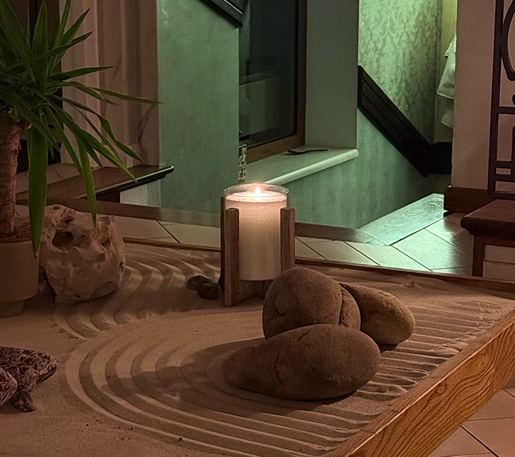
Тема: Дзен з природою
Починаємо з Муніципального. Там завжди прикольні виставки і безкоштовний вхід. + вони часто проводять лекції, кіноперегляди, замальовки та інші події.
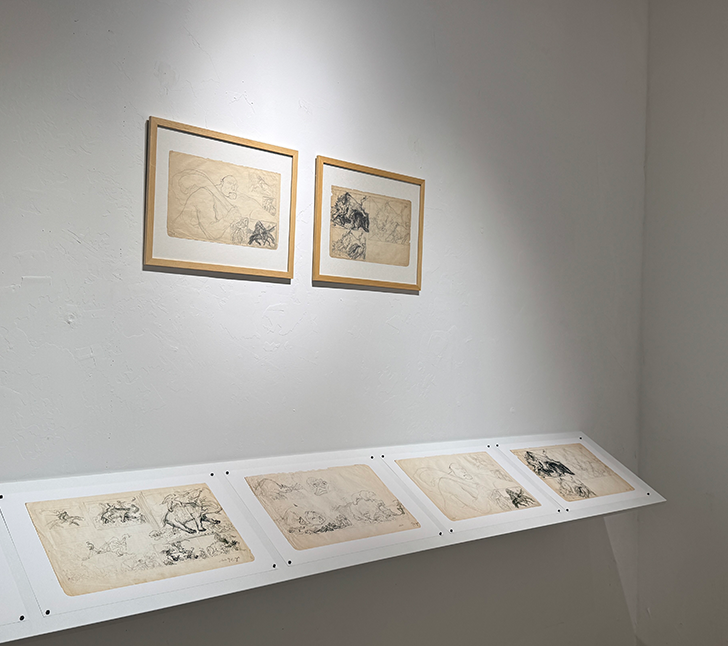
Як і в Плаві тут дуже атмосферний внутрішній дворик. Смачна кава і, як не дивно, атмосфера Вітальні.
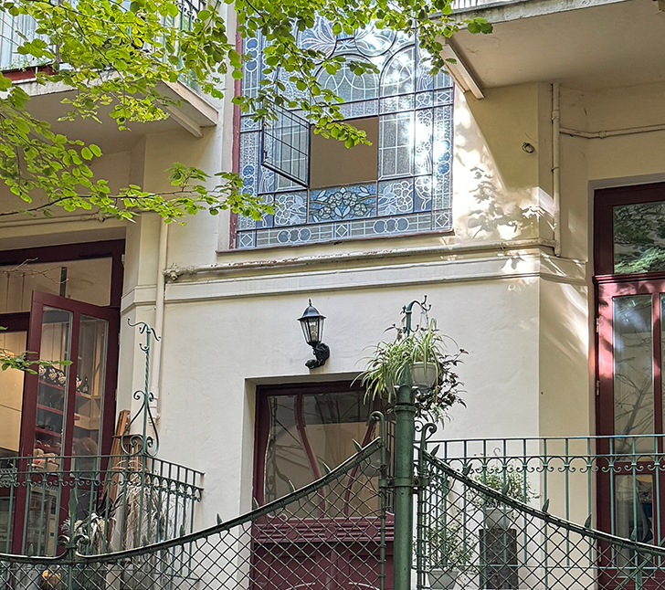
Улюблений шоурум. Можна залипнути на годину просто розглядаючи все що стоїть на продаж. Ultimate місце для покупки подарунків, вам ще й все красивенько запакують.
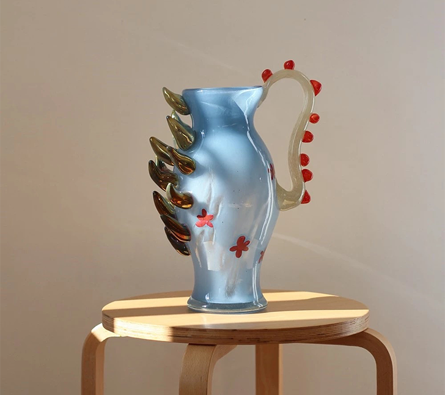
Зайдіть поїсти веганські страви, та відчуйте себе в нефорській творчій тусовці.
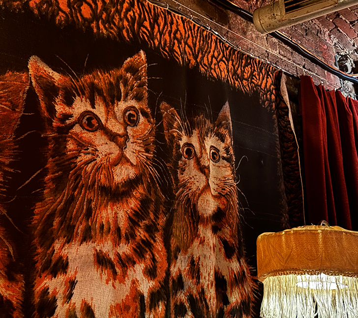
Поки ви йдете по найкращій (на мою субʼєктивну думку) вулиці Пекарській — зайдіть гляньте на озеро у Ветеринарному уніку. Люблю там посидіти, повайбувати на сонечку разом з качечками.
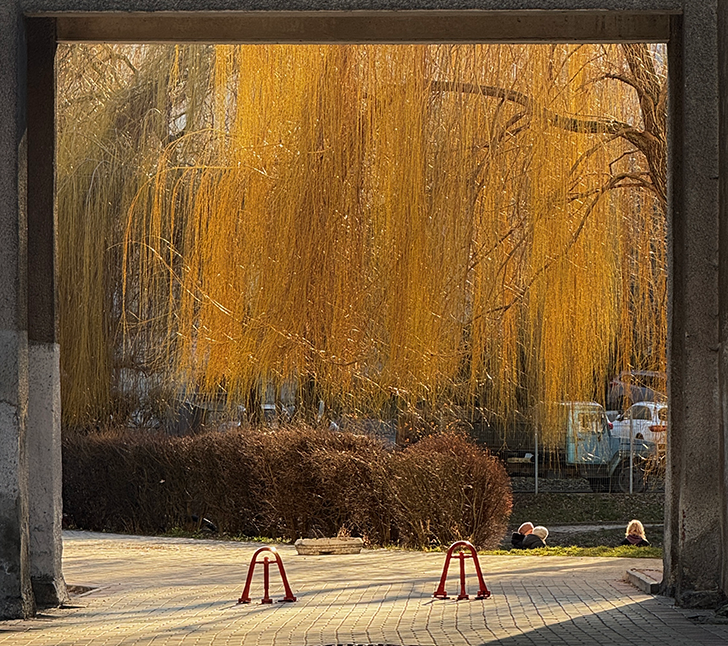
Можна окремо йти на цілий день на тер-рію Личаківського цвинтаря, і все одно все не облазити. Якщо маєте час — залізьте в якусь дальню стару частину, подосліджуйте могили 19-20 століть. Відчула себе археологом коли там була.
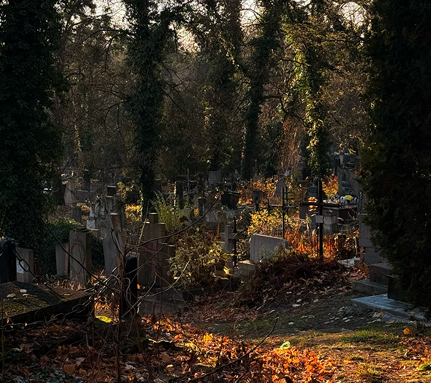
Після цвинтаря йдіть в Личаківський парк. Раджу піти саме провулками, повз меморіал Героїв України і вверх Цетнерівкою. Увійшовши в парк можете пройти його наскрізь і потім завернути вправо, а можете одразу лізти вгору вправо. Трохи пошукавши знайдете заховану кущами панораму на центр.
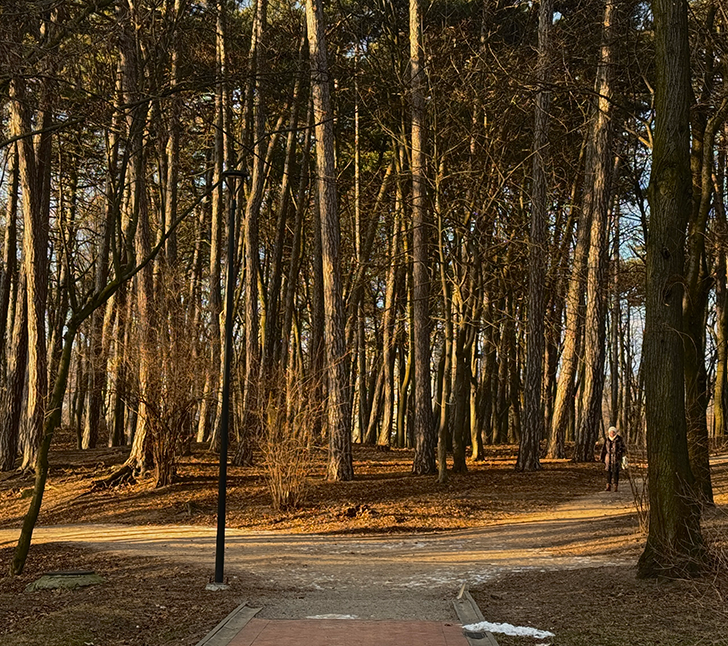
І на завершення такого насиченого дня — йдіть в АТБ на Личаківській. У Львові дуже мало АТБ, і це крає мені серце. Тому зайдіть, кайфаніть, купіть собі булочку, і можете спускатись вниз по Личаківській назад в центр.
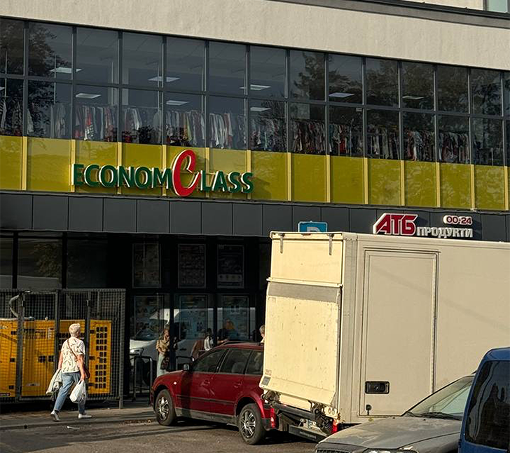
Тема: Окультуритись
Зайдіть візьміть собі кави в Альтеркаві, і можете спокійно рушати по головним мистецьким точкам Львова.
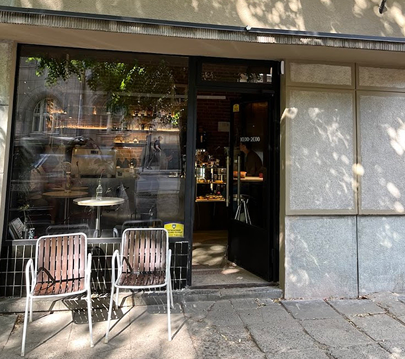
Кайфові виставки в кайфовій будівлі. Не поспішайте, розглядайте деталі, подумайте про сенси життя.
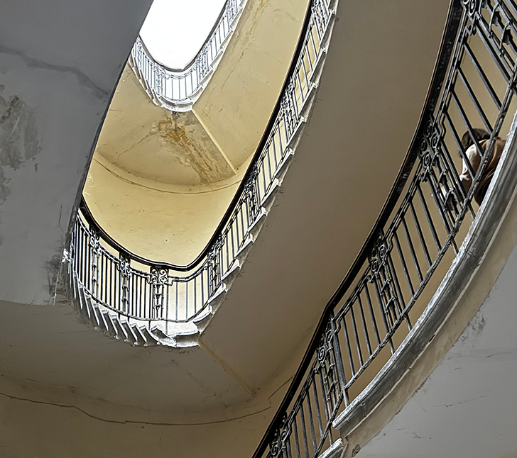
Сейм, що і з пентхаусом, гляньте на мистецтво.В ЯГалереї часто проводяться замальовки оголеної натури, раджу хоч раз сходити.
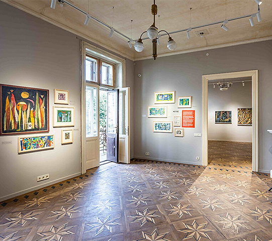
ЧЦе вам не звичайна бібліотека, а мистецька. Багато крутезних видань зі всеможливих тем, починаючи з дизайну та традиційного живопису, закінчуючи театром та музикою. Звісно там є й відділи з більш звичною літературою, типу історії, математики, української прохи і поезії.
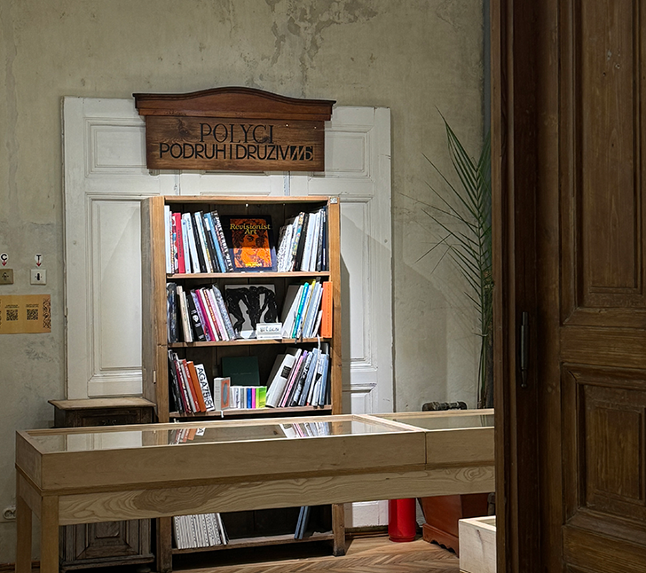
Відносно нова галерея, виставляє відомих митців. Наприклад зараз була експозиція робіт Тараса Шевченка, а до того були Айвазовський та Марчук. Кожного останнього числа місяця вхід в галерею — безкоштовний. Але готуйтесь до величезних черг.
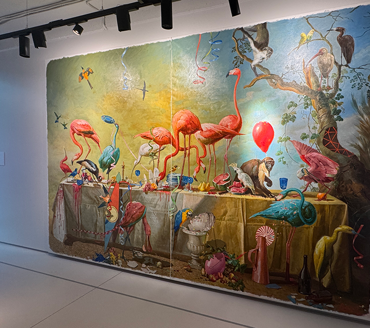
Якщо насолодились високим — час згадати як каша вдома пахне і піти в Містечко. Це бістро з смачною їжею, (звісно, на мою субʼєктивну думку, але не стикалась з протилежною), де можна поїсти чи ненайдешевше у Львові. Але судячи з відгуків на гугл мепс — не беріть чебуреки...
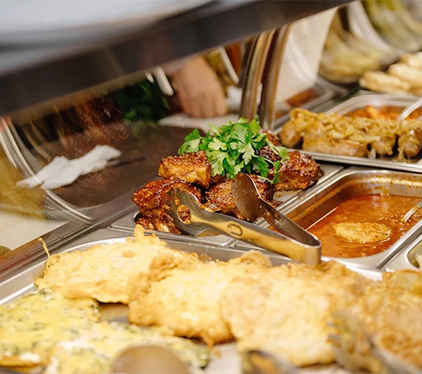
Не згадати про Alma Mater буде злочином, тому можете зайти в галерею на території академії, а також походити навколо корпусів. Якщо у вас є знайомі в академії чи ви просто дуже сміливі — пройдіться корпусами — в середині виставлені роботи студентів різних кафедр ЛНАМ. Або просто прийдіть на день відкритих дверей — не пошкодуєте.
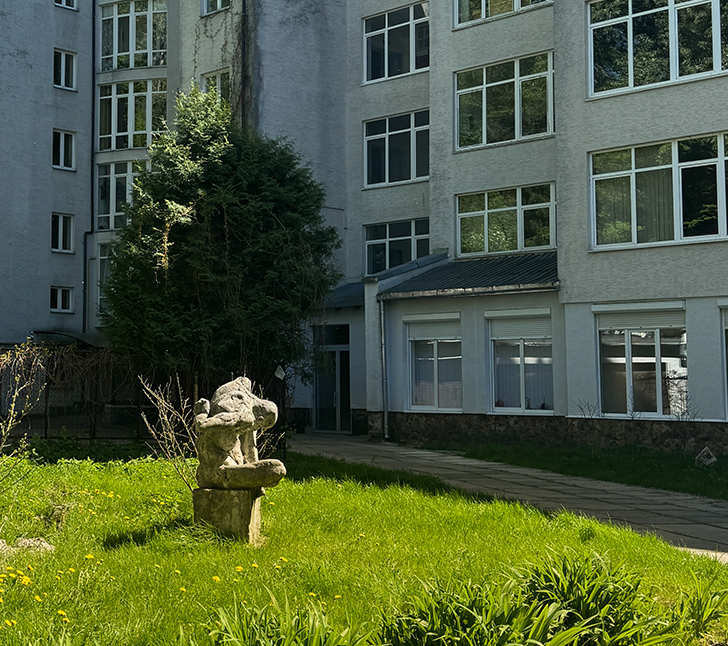
І на завершення такого мистецького дня — квест — знайдіть 3 озера. Це не важко, і результат того вартує. Вам треба від ЛНАМ піти на вулицю Кримську, пройтись і завернути на перший поворот наліво. Там буду два неймовірних озера. Почильте там, і верніться на знов на Кримську. Йдіть вперед поки не натрапите на третє озеро( воно мій фаворит). Це і буде фініш.
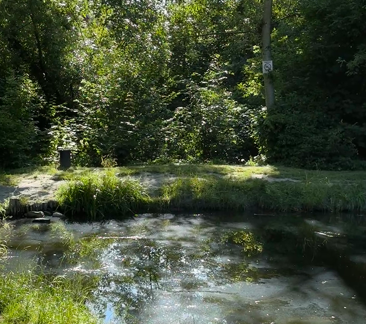